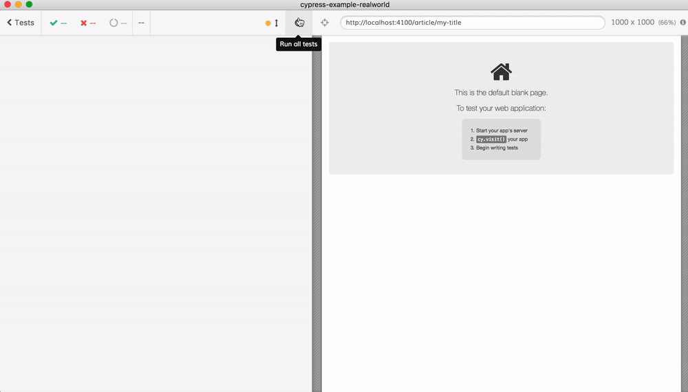
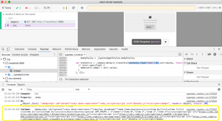
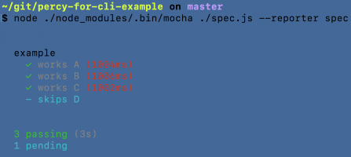
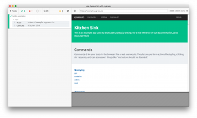
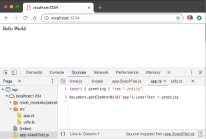
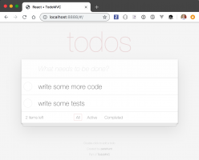

Great Post!!! Thanks!!!!
Also on Better world by better software

How to write end-to-end test using app …
Note: the source code for this blog post is in repo …

End-to-end Testing for Server-Side …
SSR application Check HTML Removing application bundle Disable …
Better world by better software
Information read https://lizkeogh.com/2019/07/02/off-the-charts/ sign up for …

Visual diffing flow for your pretty CLI …
Note: you can find the example source code in repo …

Better world by better software
How to write Cypress.io end-to-end tests in TypeScript is a question …
Write Your First Vue Component Test
Application End-to-end tests Components Component tests App …

Using TypeScript aliases in Cypress …
In this post I will show how you can write end-to-end tests in TypeScript and …

Better world by better software
Take the TodoMVC example application that uses the common …
What do you think?
10 Responses

Upvote

Funny

Love

Surprised

Angry